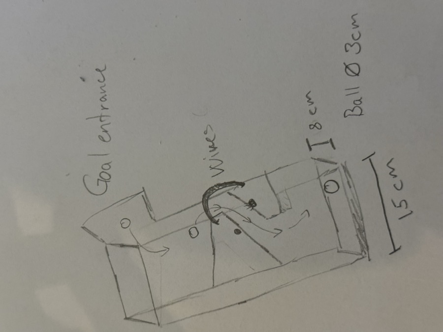
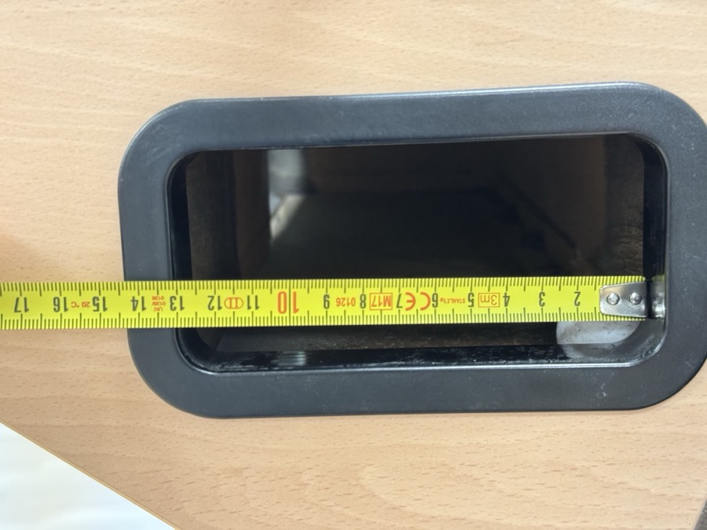
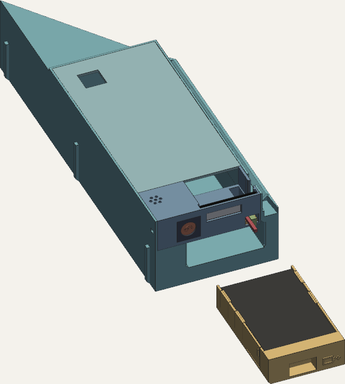
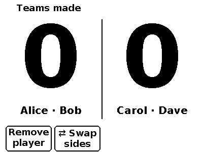
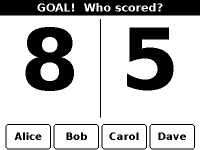

<style>
/* additions for this deck */
.plate{background:#f4f2ec;border-radius:12px;overflow:hidden;display:flex;align-items:center;justify-content:center}
.plate img{display:block;width:100%;height:100%;object-fit:contain}
.cap{font-family:var(--mono);font-size:12.5px;letter-spacing:.06em;color:var(--steel);margin-top:8px}
.fig{display:flex;flex-direction:column}
.cols{display:grid;grid-template-columns:1.15fr .85fr;gap:26px;align-items:start}
.gallery{display:grid;grid-template-columns:repeat(4,1fr);gap:12px}
.gallery .plate{height:132px}
video{display:block;width:100%;border-radius:12px;border:1px solid var(--line);background:#000}
.vidwrap{position:relative;z-index:2;margin-top:22px;width:880px;align-self:center}
/* org chart */
.org{display:flex;flex-direction:column;align-items:center;gap:0}
.org .lvl{display:flex;gap:10px;justify-content:center;width:100%}
.org .node{min-width:260px;align-items:center;text-align:center}
.org .vline{width:2px;height:18px;background:var(--line-2)}
.org .depts{display:grid;grid-template-columns:repeat(6,1fr);gap:10px;width:100%;border-top:2px solid var(--line-2);padding-top:16px}
.org .tile{min-height:0;padding:12px 13px;gap:3px}
.org .tile .ds{font-size:13.5px}
.org .tile .role{font-family:var(--mono);font-size:11px;letter-spacing:.08em;text-transform:uppercase;color:var(--steel)}
/* example callout */
.ex{background:var(--panel);border:1px solid var(--line);border-left:3px solid var(--amber);border-radius:10px;padding:14px 18px;display:flex;flex-direction:column;gap:6px}
.ex .k{font-family:var(--mono);font-size:12px;letter-spacing:.09em;text-transform:uppercase;color:var(--amber)}
.ex p{font-size:17px;line-height:1.45}
.ex .log{font-family:var(--mono);font-size:13.5px;color:var(--dim);line-height:1.5}
/* hiring timeline */
.tl{position:relative;display:grid;grid-template-columns:repeat(9,1fr);gap:8px;padding-top:30px}
.tl::before{content:"";position:absolute;left:0;right:0;top:9px;height:2px;background:linear-gradient(90deg,var(--steel),var(--amber))}
.tl .ev{position:relative;display:flex;flex-direction:column;gap:5px}
.tl .ev::before{content:"";position:absolute;top:-26px;left:0;width:12px;height:12px;border-radius:50%;background:var(--ink);border:2px solid var(--amber)}
.tl .t{font-family:var(--mono);font-size:14px;color:var(--amber)}
.tl .w{font-size:16px;font-weight:600}
.tl .y{font-size:14px;color:var(--dim);line-height:1.35}
.steps .keyrow{grid-template-columns:150px 1fr;padding:8px 0}
.wideli li{max-width:none!important}
.steps .kk b{display:block;color:var(--steel);font-weight:500;font-size:13px;letter-spacing:.06em;text-transform:uppercase;margin-top:2px}
</style>

    <!-- 1 -->
    <section class="slide title" data-eyebrow="title" data-time="0:20">
      <div class="amp-big">&amp;</div>
      <div style="position:relative;z-index:2">
        <div class="eyebrow"><span class="pmt">~/mmr-project/hardware</span> ▸ a learning journey <span class="caret"></span></div>
        <h1 style="margin-top:26px">The agent<br>company</h1>
        <p class="sub" style="font-size:26px;margin-top:18px">How a team of specialist agents builds a product</p>
        <div class="rule"></div>
        <div class="meta"><span>one CEO agent</span><i class="dot"></i><span>thirteen specialists</span><i class="dot"></i><span>one human client</span><i class="dot"></i><span>10 min</span></div>
      </div>
      <template class="notes">Opening line: "Over three days I ran a small company. Every employee was a Claude Code session, the CEO was too, and I was the client. This talk is about how that company was run, because that's the part you can reuse."</template>
    </section>

    <!-- 2 -->
    <section class="slide" data-eyebrow="the journey" data-time="0:55">
      <div class="eyebrow"><span class="pmt">▸</span> the journey</div>
      <h2>What we're here to learn</h2>
      <div class="content">
        <div class="cols anim">
          <div style="display:flex;flex-direction:column;gap:18px">
            <p class="foot pull">One agent with one focus is a contractor. <strong>A swarm with different focus areas needs what any company needs</strong>: roles, onboarding, contracts, a paper trail, management and QA.</p>
            <ol class="num small">
              <li>The org chart</li>
              <li>Onboarding, contracts and the paper trail</li>
              <li>Escalation, verification and QA</li>
              <li>Hiring as needs appear, and the client steering</li>
            </ol>
            <p class="foot"><strong>The case study</strong>: a foosball goal counter plus a scoreboard on each table (sensors, firmware, 3D-printed parts, backend, admin UI). It is the example, not the point.</p>
          </div>
          <div class="fig"><div class="plate" style="height:420px;background:#e9e7e1"></div><div class="cap">the client's brief: a voice note + this sketch</div></div>
        </div>
      </div>
      <template class="notes">The product needed four engineering disciplines that depend on each other: electronics decides pins, firmware uses them, mechanical prints a case around the parts, backend receives the events. That interdependence is why it's a good case study for a team, rather than for one agent.

Starting input: a voice brief and three phone photos of pencil sketches (this is one of them).</template>
    </section>

    <!-- 3 -->
    <section class="slide" data-eyebrow="the org chart" data-time="1:35">
      <div class="eyebrow"><span class="pmt">▸</span> 1 · the org chart</div>
      <h2 class="wide">A client, a CEO, and departments</h2>
      <div class="content">
        <div class="org anim">
          <div class="lvl"><div class="node"><b>Client / board</b><span class="cmd">the human · gives direction by voice</span></div></div>
          <div class="vline"></div>
          <div class="lvl"><div class="node hero"><b>CEO · lead</b><span class="cmd">the only one who talks to the client</span></div></div>
          <div class="vline"></div>
          <div class="depts">
            <div class="tile"><span class="role">hardware</span><span class="nm">electronics</span><span class="ds">parts, BOM, wiring</span></div>
            <div class="tile"><span class="role">embedded</span><span class="nm">firmware</span><span class="ds">ESP32, Wi-Fi, REST</span></div>
            <div class="tile"><span class="role">industrial design</span><span class="nm">mechanical</span><span class="ds">3D-printed parts</span></div>
            <div class="tile"><span class="role">design</span><span class="nm">ux</span><span class="ds">screens, physical UX</span></div>
            <div class="tile"><span class="role">marketing</span><span class="nm">video</span><span class="ds">the product film</span></div>
            <div class="tile"><span class="role">backend</span><span class="nm">backend</span><span class="ds">device API</span></div>
            <div class="tile"><span class="role">frontend</span><span class="nm">admin-ui</span><span class="ds">claim + live score</span></div>
            <div class="tile"><span class="role">ops</span><span class="nm">observability</span><span class="ds">OTel, Grafana</span></div>
            <div class="tile"><span class="role">data</span><span class="nm">analytics</span><span class="ds">match metrics</span></div>
            <div class="tile accent"><span class="role">QA</span><span class="nm">twin, review</span><span class="ds">simulate, inspect</span></div>
            <div class="tile accent"><span class="role">process</span><span class="nm">coach</span><span class="ds">audits how we work</span></div>
            <div class="tile accent"><span class="role">comms</span><span class="nm">presenter</span><span class="ds">this deck</span></div>
          </div>
        </div>
        <p class="anim foot">Every employee is a Claude Code session (Opus) in its own terminal tab, and can bring in its own sub-agents: <strong>contractors</strong>.</p>
      </div>
      <template class="notes">The rule that makes this an org chart and not a chat room: specialists talk to the CEO and to each other, never to the client. The client gets one voice, and the CEO batches and filters questions.

Amber tiles are the roles with no stake in the design: QA and comms.</template>
    </section>

    <!-- 4 -->
    <section class="slide" data-eyebrow="onboarding" data-time="2:10">
      <div class="eyebrow"><span class="pmt">▸</span> 2 · onboarding</div>
      <h2>Every hire gets a one-page brief</h2>
      <div class="content">
        <div class="grid2 anim">
          <div class="card"><div class="k">team/briefs/&lt;role&gt;.md</div>
            <ul class="bul tight" style="margin-top:6px">
              <li>What you <strong>own</strong>, and the folder you may write in</li>
              <li>What <strong>done</strong> looks like</li>
              <li>Who you <strong>depend on</strong>, and who depends on you</li>
            </ul>
          </div>
          <div class="card"><div class="k">team/PROTOCOL.md · the employee handbook</div>
            <ul class="bul tight" style="margin-top:6px">
              <li>Report progress and done to the CEO</li>
              <li>Questions for the client go via the CEO</li>
              <li>Stay in your folder. No commits: the client approves</li>
            </ul>
          </div>
        </div>
        <div class="ex anim"><span class="k">from the log · first five minutes</span>
          <p class="log">19:55 mechanical → electronics: "for the insert I need, per part, L x W x H mm + mounting + connector/wire exit side: MCU board, AA battery holder, motion sensor …"</p>
          <p>A new hire who knows their dependencies asks the right colleague on day one, without the CEO in the loop.</p>
        </div>
      </div>
      <template class="notes">Briefs are short on purpose: a long brief eats the employee's context, and a full context is the agent equivalent of burnout.

Every agent's first action is the same: read PROTOCOL, read its brief, skim the log for messages addressed to it, send "started".</template>
    </section>

    <!-- 5 -->
    <section class="slide" data-eyebrow="contracts" data-time="2:50">
      <div class="eyebrow"><span class="pmt">▸</span> 2 · contracts between departments</div>
      <h2 class="wide">INTERFACES.md: one contract, an owner per row</h2>
      <div class="content">
        <div class="keylist anim">
          <div class="keyrow"><div class="kk">electronics ↔ firmware</div><div class="vv small">pin map, battery thresholds, power budget</div></div>
          <div class="keyrow"><div class="kk">electronics ↔ mechanical</div><div class="vv small">part dimensions, wire exits, battery swap</div></div>
          <div class="keyrow"><div class="kk">firmware ↔ backend</div><div class="vv small">the device API, as <code>openapi.yaml</code>, checked by a mock server</div></div>
        </div>
        <div class="ex anim"><span class="k">example · device authentication</span>
          <p>Firmware proposed the auth headers to backend. The CEO added two rules: check the enrolment token <strong>only for unknown devices</strong>, and <strong>store a hash</strong> of the secret. Backend agreed, firmware wrote it into <code>openapi.yaml</code>, and backend replied <em>"I implement exactly the spec."</em></p>
        </div>
        <p class="anim foot">Each row's <strong>owner edits it and the CEO reviews the diff</strong>. Headline numbers live <strong>once</strong>, in a §0 table every other document cites.</p>
      </div>
      <template class="notes">This is the most important process in the deck. Without a single-owner contract, two agents happily build against two different pin maps and both report "done".

The auth negotiation took about five messages, between three agents, without the client involved.

This rule changed during the project. At first only the CEO edited the file; the coach's audit showed the CEO had become the bottleneck, so row owners now edit their own rows, and battery life, costs, ball size and test counts each live in one row of a "Numbers" table with an owner.</template>
    </section>

    <!-- 6 -->
    <section class="slide" data-eyebrow="paper trail" data-time="3:25">
      <div class="eyebrow"><span class="pmt">▸</span> 2 · the paper trail</div>
      <h2>Decisions and status, written down</h2>
      <div class="content">
        <div class="stats anim">
          <div class="stat"><div class="n amber">193</div><div class="l">client inputs · [user]</div></div>
          <div class="stat"><div class="n">86</div><div class="l">CEO calls · [lead]</div></div>
          <div class="stat"><div class="n">1,762</div><div class="l">messages in log.md</div></div>
        </div>
        <div class="grid2 anim">
          <div class="card"><div class="k">DECISIONS.md</div><p>Every client input and CEO call, <strong>with the why</strong>. A hire who joins the next morning reads one file and knows everything that was decided.</p></div>
          <div class="card"><div class="k">status reports</div><p><code>progress:</code> at milestones, <code>done:</code> with the files <strong>and the command to verify</strong>. No silent work.</p></div>
        </div>
        <pre class="anim">printf '\n## %s  %s -&gt; %s\n%s\n' "$(date)" "$from" "$to" "$*" &gt;&gt; log.md   <span class="cm"># the record</span>
herdr agent prompt "$t" "[msg from $from] $*"                          <span class="cm"># the delivery</span></pre>
      </div>
      <template class="notes">The log is append-only, so it's the audit trail; every number in this talk was counted from it.

Example of a CEO call with its why: "Still no LDR: its 20–30 ms response is the same order as the time a moving ball blocks the beam, so fast goals could be missed."</template>
    </section>

    <!-- 7 -->
    <section class="slide" data-eyebrow="management" data-time="4:05">
      <div class="eyebrow"><span class="pmt">▸</span> 3 · escalation and verification</div>
      <h2 class="wide">The CEO settles disputes and checks the work</h2>
      <div class="content compact">
        <div class="ex anim"><span class="k">escalation · which team is on the left of the scoreboard?</span>
          <p>Backend said one side; firmware and the digital twin said the other. Backend escalated: <em>"need your call."</em> The CEO decided <strong>from the geometry</strong> (the board faces along the table, so the reader faces towards its end), and asked backend for a test that pins it.</p>
        </div>
        <div class="stats anim">
          <div class="stat"><div class="n amber">55</div><div class="l">firmware tests</div></div>
          <div class="stat"><div class="n">30</div><div class="l">contract payloads</div></div>
          <div class="stat"><div class="n">294</div><div class="l">API integration tests</div></div>
          <div class="stat"><div class="n">19</div><div class="l">twin scenarios</div></div>
        </div>
        <p class="anim foot"><strong>"Done" is a claim.</strong> The CEO re-runs the command before accepting: <em>"Accepted v0.1 (lead re-ran native: 15/15)."</em> Firmware tests grew from 13 to 89, then dropped to 50 when the parked scoreboard's code left the tree (55 now); the CEO re-ran each step.</p>
      </div>
      <template class="notes">Two management habits: disputes go up, not sideways forever; and the manager verifies instead of trusting the status report. Treat an agent's "done" like a colleague's "works on my machine".

The four counts are the current ones from INTERFACES §0, all passing (2026-10-15).</template>
    </section>

    <!-- 7b -->
    <section class="slide" data-eyebrow="cross-team feature" data-time="4:55">
      <div class="eyebrow"><span class="pmt">▸</span> 3 · one request, five departments</div>
      <h2 class="wide">The client asks by voice; five departments split it</h2>
      <div class="content compact">
        <p class="anim foot" style="max-width:none"><em>"Give the scoreboard 4 RGB LEDs and a badge reader: scan in, get balanced teams."</em></p>
        <div class="keylist steps anim">
          <div class="keyrow"><div class="kk">08:54<b>CEO</b></div><div class="vv small">Splits the request: parts to electronics, the flow to ux, the API to backend.</div></div>
          <div class="keyrow"><div class="kk">09:00<b>electronics</b></div><div class="vv small">Picks the reader, the LED driver and the pins. Vetoes steady LEDs: lit all game, the battery lasts <strong>≈ 3 weeks</strong>.</div></div>
          <div class="keyrow"><div class="kk">09:06<b>ux · backend</b></div><div class="vv small">ux designs around the veto: LEDs only while teams form, otherwise 1 s flashes. Backend proposes the badge API.</div></div>
          <div class="keyrow"><div class="kk">09:07<b>admin-ui · CEO</b></div><div class="vv small">admin-ui: a link must not bind a badge on its own, or someone could bind <em>their</em> badge to <em>your</em> account. <strong>Confirm tap added.</strong> The CEO checks the budget: ≈ 4.7 months.</div></div>
          <div class="keyrow"><div class="kk">09:29<b>firmware</b></div><div class="vv small">Reader and LED drivers built to the new contract: 69/69 tests, all 5 builds.</div></div>
        </div>
        <p class="anim foot" style="max-width:none"><strong>35 minutes from a voice request to tested firmware</strong>, with no meeting.</p>
      </div>
      <template class="notes">This is the best single example of the company working. Times are from team/log.md.

The veto is the interesting part: electronics didn't say "no LEDs", it gave the number (≈ 3 weeks if lit all through play), and ux designed a flow that fits: steady colours only on the lobby and teams screens with 10 s timeouts, ~1 s flashes otherwise. The CEO then asked electronics to confirm ≈ 4.7 months and, if it came in under 4.5, to propose the cheapest fix rather than change the flow.

admin-ui's catch was unprompted: security review by the frontend department, not by a security team.

The ≈ 4.7 months was that morning's estimate. After the electronics review the battery figures became ranges, EST until the bench (INTERFACES §0); the lesson is the budget discipline, not the number.</template>
    </section>

    <!-- 8 -->
    <section class="slide" data-eyebrow="QA" data-time="5:35">
      <div class="eyebrow"><span class="pmt">▸</span> 3 · QA and independent review</div>
      <h2>Reviewers with no stake find what builders miss</h2>
      <div class="content compact">
        <div class="grid2 anim">
          <div class="card"><div class="k">QA · digital twin</div><p>Simulated tables found <strong>3 real firmware bugs</strong>. Now 19/19 scenarios pass with 31 and 36 mm balls, and <strong>771 stress runs lost 0 goals</strong>.</p></div>
          <div class="card" style="border-color:rgba(232,163,61,.45)"><div class="k" style="color:var(--amber)">QA · assembly-review</div><p>First round, <strong>before anything was printed</strong>: <strong>7 blockers</strong>. The battery couldn't be swapped, the LED lead was 79 mm short, the scoreboard key strip couldn't be installed. Fixed within hours. The sled got the same check (1 more blocker); the gate now reads <strong>139 pass, 0 fail</strong>.</p></div>
          <div class="card"><div class="k">design review · ux → admin-ui</div><p>Claim flow: <em>"real best case is 8 taps, not 5."</em> One-tap player chips and "same players as last game" cut a repeat match to 2–3 taps.</p></div>
          <div class="card"><div class="k">peer challenge · ux → CEO</div><p>The CEO approved a QR library. ux showed a printed QR or a 5 kr NFC sticker does it with zero code. <strong>The CEO reversed itself.</strong></p></div>
        </div>
      </div>
      <template class="notes">Assembly-review is the strongest example: it built the hardware virtually, with wire, plug and finger solids, and concluded "neither device assembles as drawn": 7 blockers, 10 should-fix, 6 nice-to-have. Electronics fixed its 4 blockers within the hour (assembly-review re-checked them), mechanical the rest; the scoreboard review closed with the gate at 66 pass / 0 fail (scoreboard v5 with both sound options). The goal-counter sled then got the same 29-step virtual build, which found 1 blocker (the board couldn't go in past its second pin); after the fix the gate read 97 pass / 0 fail, and with the battery drawer, the status display, the status LEDs and the MX undo key added it reads 139 pass / 0 fail (INTERFACES §0). Found on a screen, not after a failed print.

Twin bug #3 changed the UX spec itself: ux added a root rule, "a key always does exactly what the screen shows above it".

The healthy sign is the bottom right: employees could overrule the CEO with a better argument.</template>
    </section>

    <!-- 9 -->
    <section class="slide" data-eyebrow="hiring" data-time="6:10">
      <div class="eyebrow"><span class="pmt">▸</span> 4 · hiring as needs appear</div>
      <h2>Nobody planned the org chart</h2>
      <div class="content">
        <div class="tl anim">
          <div class="ev"><span class="t">19:55</span><span class="w">electronics, firmware, mechanical</span><span class="y">the founding team</span></div>
          <div class="ev"><span class="t">20:31</span><span class="w">video</span><span class="y">client wanted a product film</span></div>
          <div class="ev"><span class="t">20:49</span><span class="w">ux</span><span class="y">scoreboards added: screens + buttons</span></div>
          <div class="ev"><span class="t">22:24</span><span class="w">twin</span><span class="y">test without hardware</span></div>
          <div class="ev"><span class="t">22:35</span><span class="w">backend, admin-ui, observability</span><span class="y">the server side</span></div>
          <div class="ev"><span class="t">22:51</span><span class="w">assembly-review</span><span class="y">independent fit check</span></div>
          <div class="ev"><span class="t">23:03</span><span class="w">presenter</span><span class="y">tell the story</span></div>
          <div class="ev"><span class="t">+1 day · 09:32</span><span class="w">analytics</span><span class="y">stats for players and matches</span></div>
          <div class="ev"><span class="t">+1 day · 19:27</span><span class="w">coach</span><span class="y">audit how we work</span></div>
        </div>
        <p class="anim foot pull">Hiring is cheap: <strong>write a brief, open a tab</strong>. The new hire reads the handbook, the decision log and the contract, and is productive in minutes.</p>
        <div class="ex anim"><span class="k">example · hiring QA</span>
          <p>Real hardware was a week away, so the CEO hired <code>twin</code>: a digital twin that simulates whole tables of devices against the firmware logic and the backend. Its first report, 16 minutes after its first message, was two real firmware bugs.</p>
        </div>
      </div>
      <template class="notes">Times are each agent's first message in the log. Analytics joined the next morning, read the decision log and the backend entities, and delivered a metrics spec (~30 metrics in 10 groups, each with formula, minimum sample and pitfalls) within minutes; its MVP rule is now on the scoreboard.

The coach was hired at the client's request to audit how the company communicates. It read all 1,269 messages so far and proposed rule changes; the CEO adopted four of them the same evening (owners edit their own contract rows, one home per headline number, every decision lists the files it changes, measure before designing).

The ordering is the lesson: start with the disciplines that define the contract, add design and QA as the product takes shape, add comms at the end.</template>
    </section>

    <!-- 10 -->
    <section class="slide" data-eyebrow="the client" data-time="6:50">
      <div class="eyebrow"><span class="pmt">▸</span> 4 · the client steers</div>
      <h2>Field data from the client changes the plan</h2>
      <div class="content">
        <div class="cols anim">
          <div class="keylist">
            <div class="keyrow" style="grid-template-columns:150px 1fr"><div class="kk">drawer photos</div><div class="vv small">The black frame's opening (≈ 13 × 5.7 cm) is <strong>smaller</strong> than the tunnel behind it. Within minutes the CEO paused the old work and mechanical proposed a <strong>sled in two units</strong> that pass the opening and lock together inside. The client's first <strong>roll-test print</strong> fed six fixes into the CAD.</div></div>
            <div class="keyrow" style="grid-template-columns:150px 1fr"><div class="kk">colour or e-paper?</div><div class="vv small">Electronics costed both; the client tried colour, then chose e-paper. Every department switched back within minutes.</div></div>
            <div class="keyrow" style="grid-template-columns:150px 1fr"><div class="kk">the narration</div><div class="vv small">The client edited the Danish script; marketing re-cut the English film from it, with captions.</div></div>
          </div>
          <div class="fig"><div class="plate" style="height:300px;background:#d9c7a8"></div><div class="cap">client photo · the real access hole</div></div>
        </div>
        <p class="anim foot">New rule: <strong>measure before geometry</strong>, and mark every guess <code>EST</code>.</p>
      </div>
      <template class="notes">193 of the 279 recorded decisions came from the client, all by voice, through the CEO. The client never had to open a file to steer. Employees argue numbers; the client decides taste and priority.

Frame the drawer photos positively: the plan met reality, and the company re-planned in minutes. The frame opening is ≈ 130 × 57 mm and the tunnel behind it ≈ 139.5 mm wide (EST, read from the first roll-test fit), per INTERFACES §0. So the sled goes in as two units that lock together inside, with batteries and USB-C reachable from the opening. A low-material roll-test print of the ball path, which doubles as a measuring gauge, came before the final CAD. The client printed it and sent four photos of the first fit; mechanical turned them into six fixes the same morning (a locking rail, a shorter left unit, no wiper, taller walls, stiffer bridges, and a new beam position; it is now ≈ 194 mm in, behind a 45° V-wall).

The lesson became PROTOCOL rule 11: before CAD that depends on the physical world, send the client the 2–3 make-or-break measurements as one batch, and mark unmeasured values EST. With every call in DECISIONS.md, re-planning is cheap.</template>
    </section>

    <!-- 11 -->
    <section class="slide" data-eyebrow="results" data-time="7:30">
      <div class="eyebrow"><span class="pmt">▸</span> results</div>
      <h2 class="wide">What the company shipped in three days</h2>
      <div class="content compact">
        <div class="gallery anim">
          <div class="fig"><div class="plate"></div><div class="cap">goal-counter sled, drawer out</div></div>
          <div class="fig"><div class="plate"></div><div class="cap">scoreboard (v5, parked)</div></div>
          <div class="fig"><div class="plate"></div><div class="cap">scan in → balanced teams</div></div>
          <div class="fig"><div class="plate"></div><div class="cap">who scored? · 39 screens in all</div></div>
        </div>
        <ul class="bul tight anim wideli" style="gap:8px">
          <li><strong>Goal counter</strong> (phase 1): a two-part sled with an IR beam, undo button, buzzer and status display; the score live on a phone</li>
          <li><strong>Scoreboard</strong> (designed, parked): badge scan-in, three ways to make teams, 5 RGB LEDs, its own sound family</li>
          <li><strong>Cost</strong>, phase 1: first table ≈ 1,400–1,500 kr (≈ 245 kr per goal counter); a scoreboard later ≈ 610 kr</li>
          <li>Firmware, contract and mock server, digital twin; backend and admin UI with table occupancy; Grafana in the dev stack; a metrics spec</li>
          <li>The film in English with captions, plus a scoreboard film, a sounds preview and a teaser</li>
        </ul>
        <p class="anim foot">1,762 messages, 279 decisions. <strong>Nothing committed</strong> without the client's OK.</p>
      </div>
      <template class="notes">Files to point at: hardware/GUIDE.html, ASSEMBLY.md, electronics/bom.md, firmware/openapi.yaml, ux/out, analytics/METRICS.md.

The first picture is the goal-counter sled, final CAD for the ball path (mechanical/SLED-ASSEMBLY.md); its front was rebuilt around two client requests: a small upright status display, and a pull-out AA drawer below it, so the cells are swapped while the sled stays in (the picture shows the drawer out); the client's last tunnel measurement (the opening's left edge, ≈ 10–15 mm) confirmed the layout. The left unit holds the board, 3 × AA, the IR emitter, the undo button and the buzzer under a lid; the right unit carries the receiver cartridge. A 1 s hold on the undo button takes back this counter's own goal within 10 s; it is the only undo (the phone view has none).

Costs are from INTERFACES §0 (AA cells, filament and tape excluded: the client already has them). They went up after the second electronics review froze exact parts, then the CEO cut them back (a wired battery lead instead of pogo pins, cheaper display and accelerometer for the fleet): ≈ 245 kr per counter, ≈ 350 for the first table's qualified parts. On the last day the client chose to start with the goal counters only (phase 1): each gets an undo button and a small buzzer, the score is watched live on a phone, and the finished scoreboard design is parked, not dropped.

Messages by sender: lead 470, electronics 250, mechanical 210, firmware 173, ux 160, backend 118, admin-ui 85, video 72, assembly-review 71, twin 69, presenter 39, analytics 17, observability 16, coach 6, others 6 (two outside reviewers and four unlabelled after a crash): 1,762 total, 2026-10-14 19:55 to 2026-10-17 14:20 (recounted 2026-10-17).</template>
    </section>

    <!-- 12 -->
    <section class="slide" data-eyebrow="the film" data-time="9:20">
      <div class="eyebrow"><span class="pmt">▸</span> the film · made by the marketing department</div>
      <div class="vidwrap anim">
        <video id="film" controls preload="metadata" playsinline poster="img/poster.jpg">
          <source src="goal-counter.mp4" type="video/mp4">
        </video>
        <div class="cap">1:47 · script, voice-over, captions and render by the <code>video</code> agent · English re-cut from the client's Danish script</div>
      </div>
      <template class="notes">1:47. Click play. Arrow keys still move slides when focus isn't on the player.

Behind the scenes: when the voice-over ran ahead of the visuals, video measured every word's onset with local speech recognition and re-timed each caption to land 0.3 s before its word.</template>
    </section>

    <!-- 13 -->
    <section class="slide" data-eyebrow="your own company" data-time="9:50">
      <div class="eyebrow"><span class="pmt">▸</span> start your own agent company</div>
      <h2>Seven processes to copy</h2>
      <div class="content">
        <ol class="num small anim">
          <li><strong>One CEO, one client channel.</strong> Specialists never ask the human directly.</li>
          <li><strong>Onboard with a one-page brief</strong> and a shared handbook.</li>
          <li><strong>Write the contract between departments down</strong>, with an owner per row and each number in one place.</li>
          <li><strong>Log every decision with its why</strong>, and every status with a command to verify.</li>
          <li><strong>Hire QA with no stake</strong>: a simulator, a reviewer, a peer from another discipline.</li>
          <li><strong>Start small, hire as needs appear.</strong> Three founders who share a contract are enough.</li>
          <li><strong>Audit the process itself</strong>, and let the CEO adopt the fixes.</li>
        </ol>
      </div>
      <template class="notes">The plumbing was a 15-line shell script and five markdown files. The process is the product, not the tooling.</template>
    </section>

    <!-- 14 -->
    <section class="slide thanks" data-eyebrow="questions" data-time="10:00">
      <div class="amp-big">&amp;</div>
      <div style="position:relative;z-index:2">
        <div class="eyebrow"><span class="pmt">~/mmr-project</span> ▸ questions <span class="caret"></span></div>
        <h1 style="margin-top:24px">Questions</h1>
        <div class="rule"></div>
        <div class="cmds">
          <span class="chip"><b>briefs/</b></span><span class="chip">PROTOCOL.md</span><span class="chip">INTERFACES.md</span><span class="chip">DECISIONS.md</span><span class="chip">log.md</span>
        </div>
      </div>
      <template class="notes">Likely questions:

· "Would one agent have been faster?" — for one discipline, yes. The win is several disciplines in parallel that keep each other honest through a written contract.

· "Who reads the code?" — the CEO re-runs builds and tests; the human reviews before anything is committed.</template>
    </section>
